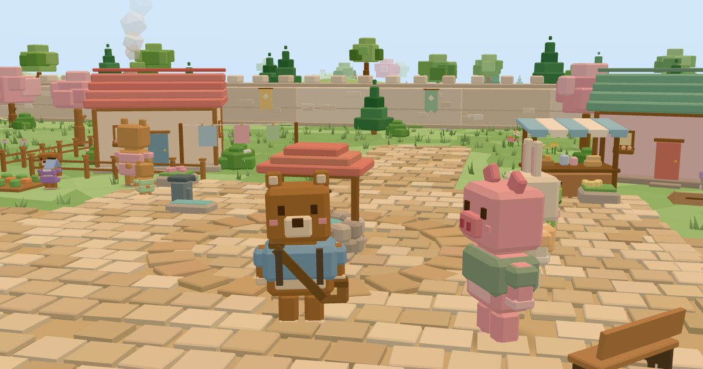

What is The Pilgrim’s Progress about?
The Pilgrim’s Progress is John Bunyan’s story of a man named Christian, who travels from the City of Destruction to the Celestial City and sets out with a heavy burden on his back. It is an allegory: the people and places stand for parts of the Christian life.

About the author
John Bunyan (1628–1688) was a tinker and preacher from Elstow, near Bedford in England. He spent about twelve years in Bedford jail for preaching without permission. The first part of The Pilgrim’s Progress was published in 1678. A second part, about Christian’s wife Christiana and their children, followed in 1684.
The Pilgrim’s Progress summary
Bunyan tells the story as a dream. This summary covers the first part, and includes the ending.
Leaving the City of Destruction
Christian reads in a book that his city will be destroyed, and he feels the weight of a burden on his back. Evangelist points him to a distant Wicket Gate. His family and neighbours won’t come, except Pliable, who gives up when the two of them fall into the Slough of Despond. Help pulls Christian out.
Talk about it: City of Destruction, Slough of Despond
The wrong road and the right Gate
Mr. Worldly Wiseman sends Christian toward the village of Morality to be rid of his burden. The road leads under a hill that flashes with fire, and he is afraid to go on. Evangelist turns him back. At the Wicket Gate, Goodwill lets him in, and the Interpreter shows him what faith looks like.
Talk about it: Worldly Wiseman & Mount Sinai, Wicket Gate & the Interpreter
The Cross
At a cross on a rise, the burden falls from Christian’s back and rolls into an empty tomb. Three Shining Ones tell him his sins are forgiven, give him new clothes and hand him a sealed roll.
Talk about it: The Cross
Hill Difficulty and Palace Beautiful
Christian passes the sleepers Simple, Sloth and Presumption, meets Formalist and Hypocrisy, and climbs the Hill Difficulty. He falls asleep in an arbour, loses his roll and has to go back for it. He walks between two chained lions to the Palace Beautiful, where he rests and is given armour.
Talk about it: The King’s Highway, Hill Difficulty, Palace Beautiful
Two dark valleys
In the Valley of Humiliation he fights Apollyon and wins with his sword. In the Valley of the Shadow of Death he walks a narrow path in the dark, praying, and is comforted by a voice ahead trusting in God.
Talk about it: Valley of Humiliation, Shadow of Death
Vanity Fair
Christian catches up with Faithful. In the town of Vanity the two pilgrims refuse to buy what the fair sells. They are arrested, and Faithful is put on trial and killed. Christian escapes, and Hopeful, who saw it all, goes with him.
Talk about it: Vanity Fair
Hill Lucre and Doubting Castle
They turn down Demas and his silver mine. Later they leave the road for an easier path, and Giant Despair throws them into the dungeon of Doubting Castle. Christian remembers a key called Promise, which opens its locks.
Talk about it: Hill Lucre, Doubting Castle
The Delectable Mountains and the Enchanted Ground
Shepherds warn the pilgrims and show them the gates of the Celestial City through a perspective glass. They are caught by the Flatterer, laughed at by Atheist, and keep each other awake by talking as they cross the Enchanted Ground.
Talk about it: Delectable Mountains, Enchanted Ground
Beulah Land and the Celestial City
The last barrier is a river with no bridge. Christian begins to sink, and Hopeful holds up his head until they reach the other side. Shining Ones lead them up to the City, where they are welcomed with joy. Ignorance arrives as well, but he has no certificate and is turned away.
Talk about it: Beulah Land, The Celestial City
Main characters
- ChristianThe pilgrim. He leaves the City of Destruction carrying a burden of sin and travels to the Celestial City.
- EvangelistHe points Christian to the Wicket Gate and corrects him when he strays.
- ObstinateA neighbour who refuses to leave home and mocks the journey.
- PliableA neighbour who sets out eagerly and turns back at the first trouble.
- HelpHe pulls Christian out of the Slough of Despond.
- Mr. Worldly WisemanHe persuades Christian to look for relief in good behaviour instead of at the Gate.
- GoodwillThe keeper of the Wicket Gate, who welcomes those who knock.
- The InterpreterHe shows Christian pictures and scenes that teach him about the road ahead.
- ApollyonThe monster who fights Christian in the Valley of Humiliation.
- FaithfulChristian’s friend and companion, who dies for his faith at Vanity Fair.
- HopefulHe joins Christian after Vanity Fair and travels with him to the end.
- By-endsHe follows religion only while it is comfortable and popular.
- Giant DespairThe owner of Doubting Castle, who locks Christian and Hopeful in his dungeon.
- IgnoranceHe trusts his own goodness, skips the Gate and is turned away at the end.
What does it mean?
The burden is sin and its guilt. Christian can’t remove it by trying harder; it falls away at the Cross. The rest of the road shows the life that follows: learning, hardship, temptation, friendship, doubt and hope, until the pilgrim reaches home with God.
Is it suitable for children?
Yes, with help. The original has old-fashioned language, some frightening scenes and Faithful’s death, so younger children usually meet it in a retelling. Our game and films tell it with animal characters and simple modern English.